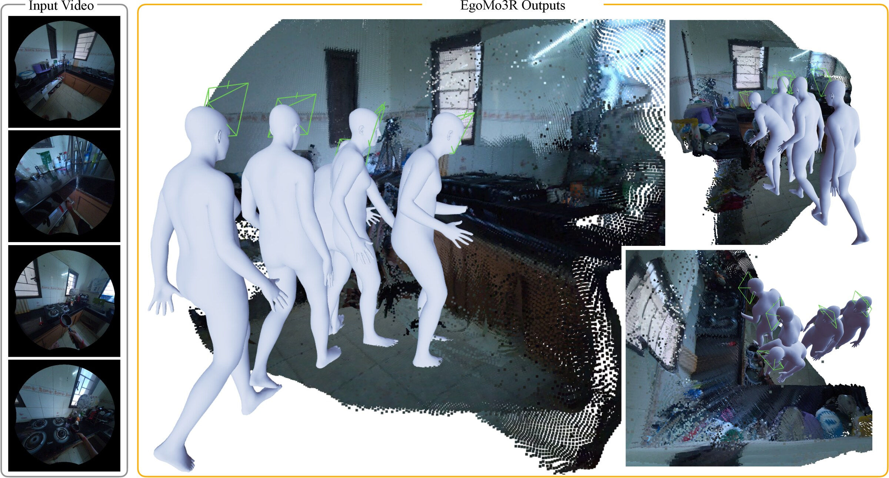
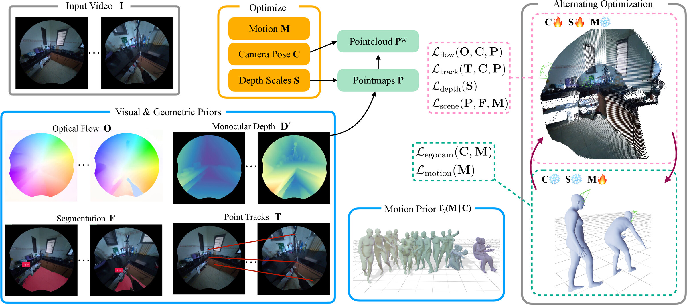

EgoMo3RJoint Egocentric Motion and Scene Reconstruction
NeurIPS 2026
Abstract
Understanding holistic 3D human motion and the surrounding environment from egocentric video is fundamental for applications in AR/VR and robotics. Although these tasks are inherently coupled, existing methods treat them separately. In particular, egocentric motion reconstruction methods typically assume access to metric, gravity-aligned camera trajectories from specialized inertial sensors. Recovering such trajectories from monocular egocentric video remains a significant challenge due to rapid head movements and motion blur. We present EgoMo3R, a joint optimization framework that simultaneously reconstructs 3D human motion and scene geometry from casual egocentric video. It leverages the robustness of low-level visuo-geometric primitives, including monocular depth, optical flow, and point tracks, integrated with a diffusion-based human motion prior via first-order optimization. We propose an alternating optimization scheme that establishes a synergistic feedback loop: scene reconstruction provides physical grounding and trajectory conditioning for the motion prior, while the motion prior regularizes the camera trajectory and anchors the scene in a metric, gravity-aligned world frame. We evaluate EgoMo3R on the highly dynamic sequences of the EgoExo4D and Nymeria datasets and show that it outperforms specialized baselines in both 3D scene reconstruction and egocentric motion estimation.
Joint Motion and Scene Reconstruction

Given an egocentric video, EgoMo3R optimizes for camera poses, 3D pointmaps, and human motion in a common gravity-aligned metric reference frame. Two additional views of the scene and motion reconstruction are shown on the right.Method

Given an input video I, we use a monocular depth estimator to obtain relative depth Dr as a geometric base, optimizing only the per-frame scales S to derive metric depth D. The framework jointly optimizes camera poses C, which transform metric depth into world-frame pointmaps PW, and 3D human motion M. We alternate between (1) Scene Refinement, which updates C and S using optical flow, point tracks, and a scene-alignment loss anchored in the canonical frame provided by motion, and (2) Motion Alignment, which refines M with a diffusion motion prior conditioned on C. This synergistic loop prevents optimization collapse and ensures physically grounded joint 3D scene and motion reconstruction.BibTeX
@inproceedings{patel2026egomo3r,
title={EgoMo3R: Joint Egocentric Motion and Scene Reconstruction},
author={Patel, Chaitanya and Kato, Yusuke and Takahira, Rin and Kozuka, Kazuki and Niebles, Juan Carlos and Adeli, Ehsan},
booktitle={Advances in Neural Information Processing Systems},
year={2026}
}